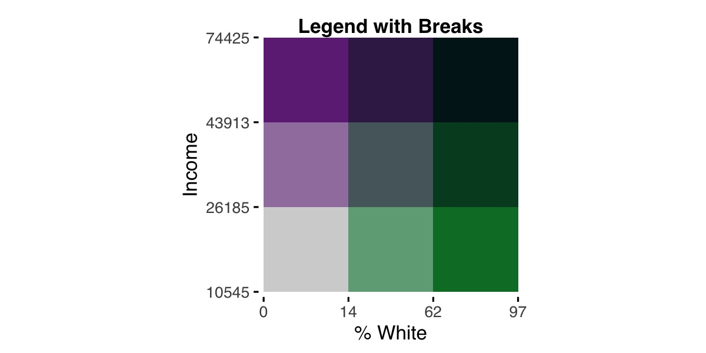
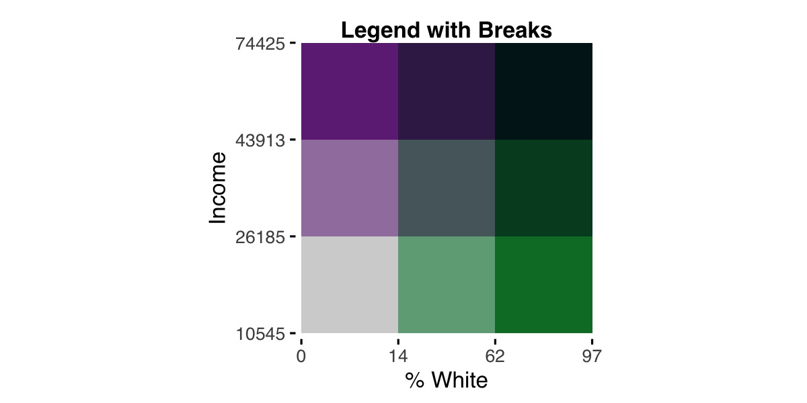
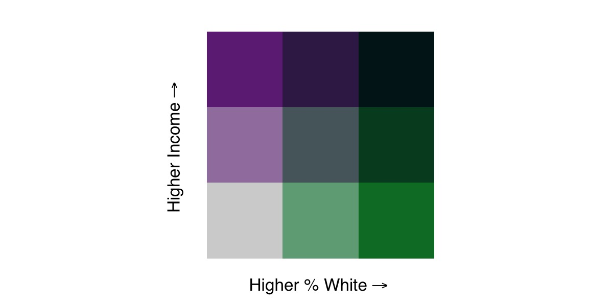
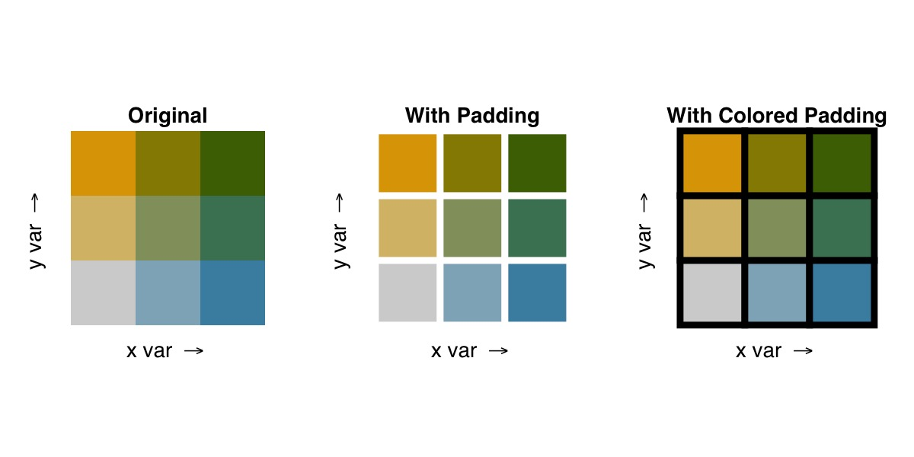
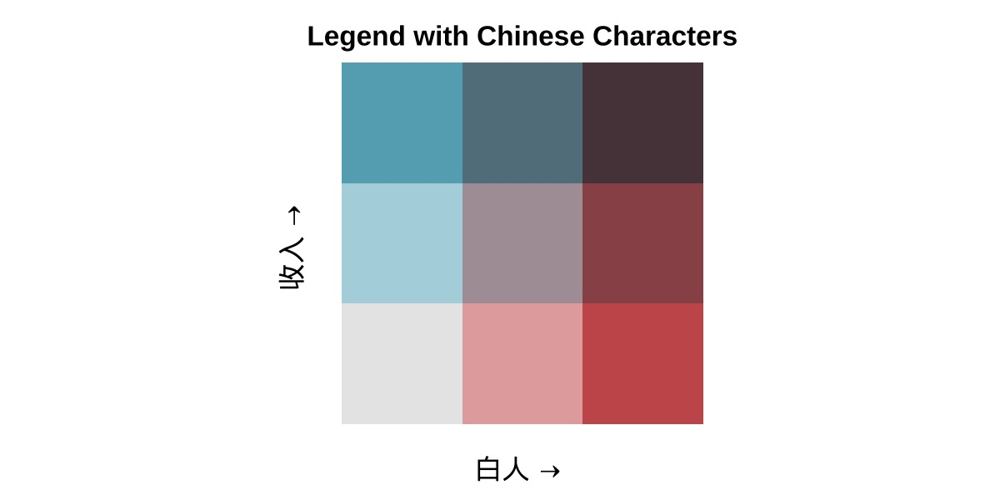

Options for Breaks and Legends
Christopher Prener, Ph.D.
2022-09-15
Source:vignettes/breaks.Rmd
breaks.RmdThe following sets of options for breaks and legends offer expanded functionality over the basic use of the biscale package, allowing users to customize how their data are sorted into different bins on the legend as well as how that legend appears.
Calculating Breaks
As of v1.0.0, biscale functions accept factors as well as numeric vectors. This allows users to exert far greater control over how bivariate classes are ultimately calculated. To start, we’ll load our dependencies and sample data:
If we investigate the pctWhite vector in our sample data, we’ll see that the data are percentage values.
> summary(data$pctWhite)
Min. 1st Qu. Median Mean 3rd Qu. Max.
0.00 3.14 37.31 40.84 69.87 96.73 Using style = "quantile" will group these based on the distribution of values, yielding breaks at approximately 14% and 62%. Perhaps we would rather group our values manually, making breaks at 33.3% and 66.6% instead.
Now that biscale accepts factors, we can construct our breaks ahead of time and pass them to the cut() function from base R. We need to ensure that the breaks created have one more value than what we will use for the dim argument in biscale’s functions. Therefore, if we intend to create a three-by-three bivariate map, our breaks that are passed to cut()’s breaks argument need to have four values.
data$pctWhite_bin <- cut(data$pctWhite, breaks = c(0,33.3,66.6, max(data$pctWhite)), include.lowest = TRUE)Using a similar approach, you can use classInt::classIntervals() to calculate your breaks as well. For example, "kmeans" is not included as one of the styles in biscale, but we can apply it to our data and use it as the basis for constructing breaks:
## calculate breaks
breaks <- classIntervals(data$pctWhite, n = 3, style = "kmeans")$brks
## cut data
data$pctWhite_bin <- cut(data$pctWhite, breaks = breaks, include.lowest = TRUE)The classInt::classIntervals() is what bi_class() uses internally to calculate breaks for continuous variables, and it is also possible to manually replicate these calculations using this approach.
No matter the approach we’ve used to create it, we can use our factor pctWhite_bin with bi_class():
bi_class(data, x = pctWhite_bin, y = medInc, style = "quantile", dim = 3)The bi_class() function will ensure that the number of factor levels in pctWhite_bin matches the value given for dim. Since medInc is a continuous measure, it will be binned using the "quantile" approach. If both the x and y variables are factors, style can be omitted. From this point forward, the biscale workflow is the same as in the basic examples.
Customizing Legends
As of v1.0.0, biscale provides two sets of tools for further customizing your legends. These include the addition of breaks or labels to each axis as well as the addition of padding between each grid square on the legend. To start, we’ll load our dependencies and sample data:
Adding Labels to the Legend
To take advantage of biscale’s new functionality for adding labels or breaks to legends, there is a companion function to bi_class() named bi_class_breaks(). The arguments are largely the same, though bi_class_breaks() contains some additional arguments for formatting the output. These options will significantly influence what your legend looks like. Of particular note are dig_lab, which impacts the number of digits returned, and split, which will impact whether you create labels (if split = FALSE) or breaks (if split = TRUE):
## example 1
labels1 <- bi_class_breaks(data, x = pctWhite, y = medInc, style = "quantile",
dim = 3, dig_lab = 3, split = FALSE)
## example 2
breaks2 <- bi_class_breaks(data, x = pctWhite, y = medInc, style = "quantile",
dim = 3, dig_lab = c(x = 2, y = 5), split = TRUE)What is crucial here is that you use the same style for calculating breaks as well as the same x and y columns.
The results illustrate important differences between the two examples:
> ## example 1
> labels1
$bi_x
[1] "0-14" "14-62" "62-96.7"
$bi_y
[1] "1.05e+04-2.62e+04" "2.62e+04-4.39e+04" "4.39e+04-7.44e+04"
>
> ## example 2
> breaks2
$bi_x
[1] 0 14 62 97
$bi_y
[1] 10545 26185 43913 74425In the first example, dig_lab = 3 is applied to both the x and y vectors, and split = FALSE creates labels where a range of values for each bin is show separated by a dash. Since dig_lab = 3, for these specific vectors, it produces inconsistently rounded values for x and scientific notation for y.
In the second example, dig_lab = c(x = 2, y = 5) uses a named vector to apply different dig_lab values to x and y. This results in consistent decimals for x and no scientific notation for y - a big improvement! Since split = TRUE, we get breaks instead of labels.
The specific values needed for dig_lab are entirely dependent on your data, and some experimentation will likely be necessary to produce values you are happy with. We’ll recreate labels1 before proceeding, using what we learned about the best dig_lab values:
## example 1 (modified)
labels1 <- bi_class_breaks(data, x = pctWhite, y = medInc, style = "quantile",
dim = 3, dig_lab = c(2,5), split = FALSE)Notice here that we use an unnamed vector for the dig_lab argument. bi_class_breaks() will accept either.
If you are using pre-made factors, these can be passed to bi_class_breaks() as well. Picking up from the example above, the factor variable `is passed to thex` argument:
bi_class_breaks(data, x = pctWhite_bin, y = medInc, style = "quantile",
dim = 3, dig_lab = c(x = NA, y = 5), split = FALSE)Note that an NA value is passed to dig_lab since pctWhite_bin has already been created as a factor. If you are using classInt::classIntervals() to create your factor, use that function’s dig_lab argument instead to prepare your labels or breaks to the desired number of decimal places.
Once you have values that are ready to use, they can be passed to bi_legend(). To illustrate the difference between labels and breaks, we’ll place the legends next to each other for comparison. First, our code:
## example 1 (modified)
legend1 <- bi_legend(pal = "PurpleGrn",
xlab = "% White",
ylab = "Income",
size = 12,
breaks = labels1,
arrows = FALSE)
## example 2
legend2 <- bi_legend(pal = "PurpleGrn",
xlab = "% White",
ylab = "Income",
size = 12,
breaks = breaks2,
arrows = FALSE)We have passed our objects containing labels or breaks, labels1 and breaks2 respectively, to the optional breaks argument. Since we now can see how values are changing, we can simplify the labels. In both cases, we have arrows = FALSE to suppress the default arrows and have less text passed to both the xlab and ylab text. Here are the results:
 

For comparison, here is the default legend:
legend3 <- bi_legend(pal = "PurpleGrn",
xlab = "Higher % White",
ylab = "Higher Income",
size = 12) 
Padding Within the Legend
If you desire a clearer delineation of the classifications within the palette, you can use the optional pad_width and pad_color arguments to style the legend.
## adjusting padding width only
bi_legend("BlueGold", pad_width = 1.5)
## adjusting padding width and color
bi_legend("BlueGold", pad_width = 1.5, pad_color = '#000000')
Using Non-Latin Characters
As of v1.1.0, biscale’s legends accept non-Latin characters. The bi_legend() function now has a base_family argument that can be use to alter the legend font family used. It defaults to "sans", which has always been the font family used in biscale. However, users who wish to utilize non-Latin characters may find that "sans" will not print their inputs. By setting base_family = "", those characters can now be used to created legends in biscale if the suggested package showtext is installed.
If you want to use non-Latin characters, you can either install showtext individually (faster) or install all of the suggested dependencies at once (slower, will also give you a number of other packages you may or may not want):
## install just showtext
install.packages("showtext")
## install all suggested dependencies
install.packages("biscale", dependencies = TRUE)Once you have showtext installed, you should include showtext::showtext_auto() prior to using bi_legend():
# set language preferences
showtext::showtext_auto()
# create legend
bi_legend(pal = "GrPink",
dim = 3,
xlab = "白人",
ylab = "收入",
size = 12,
arrows = TRUE,
base_family = "")
When you use bi_theme(), be sure to set base_family = "" as well so that you can use non-Latin characters there, too.